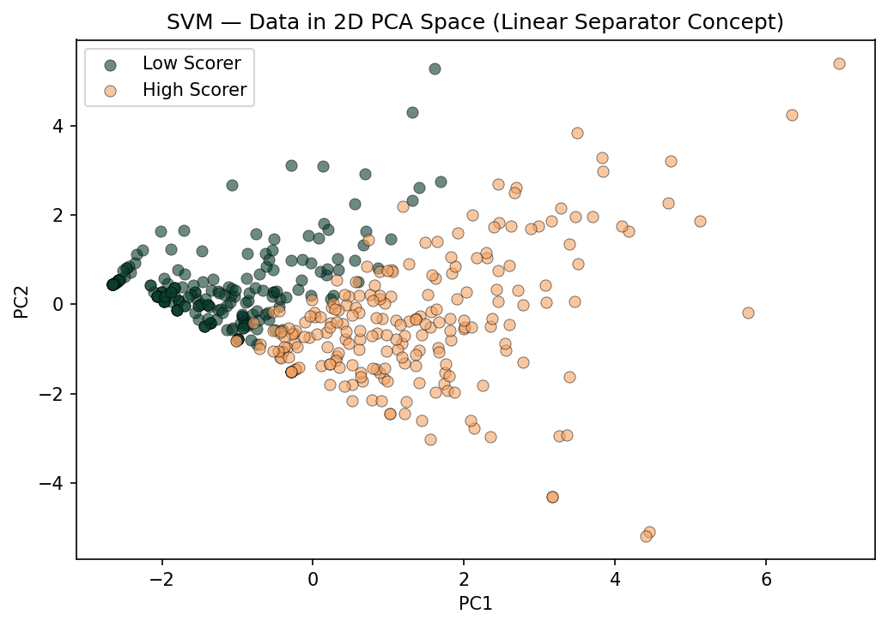
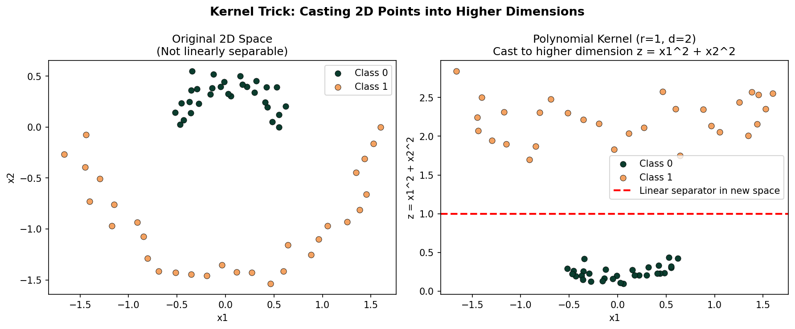
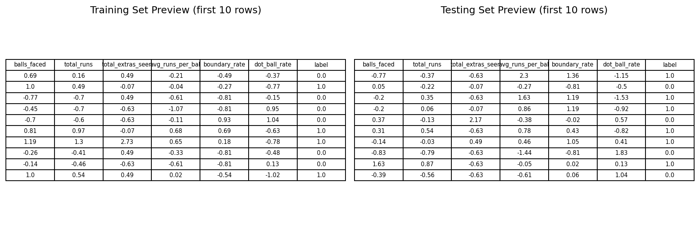
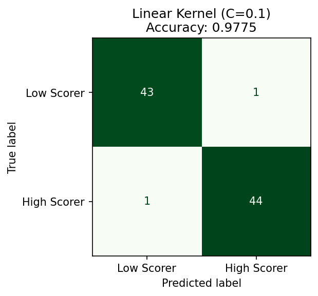
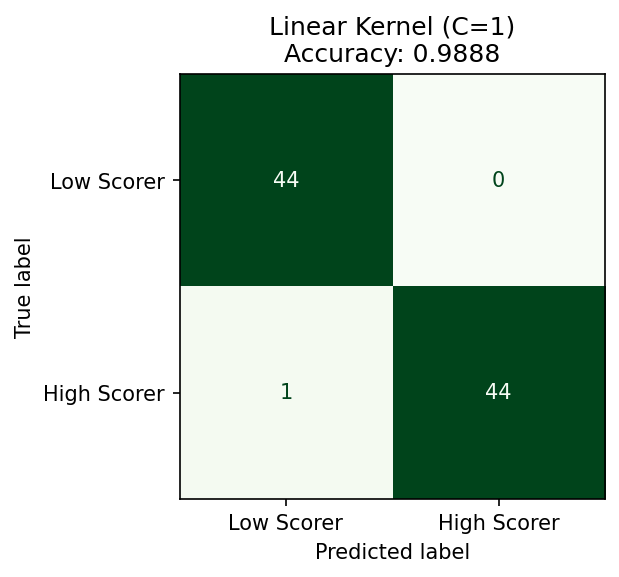
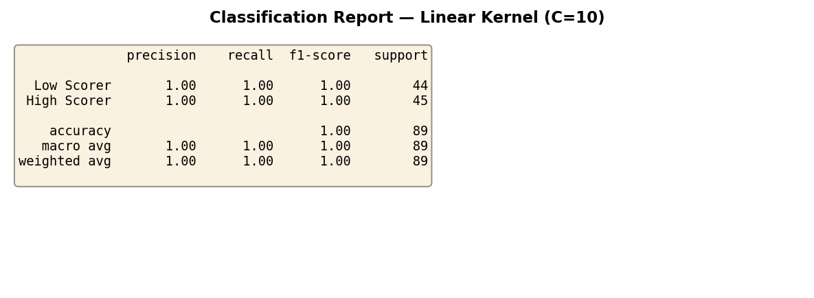
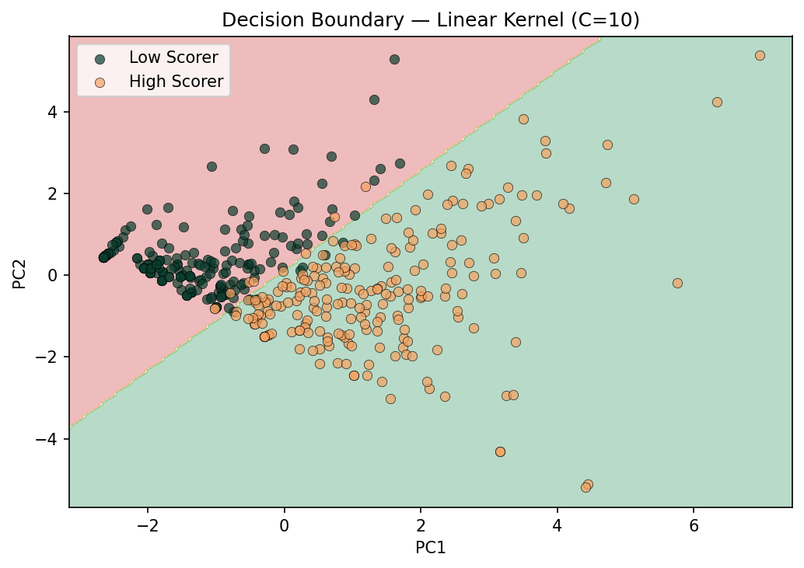
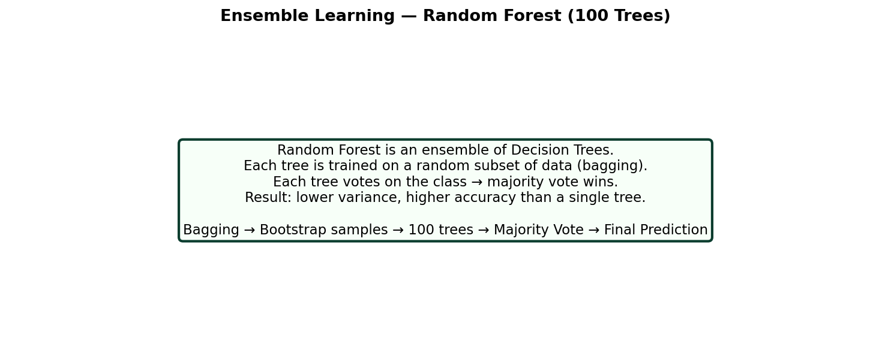
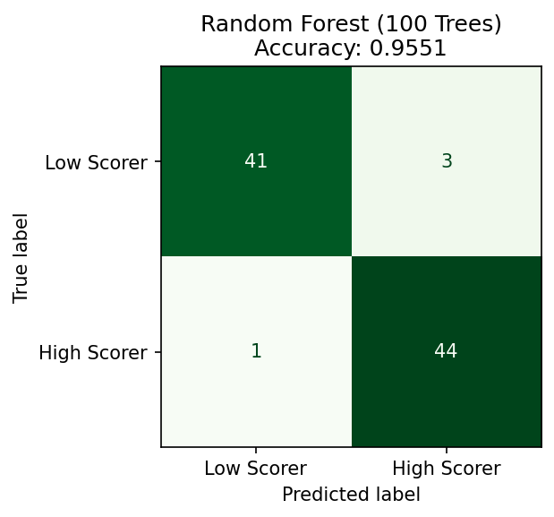
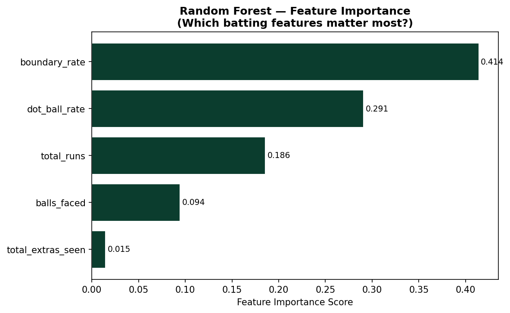

Cricket is more than just a sport; it is a passion shared by millions of people around the world. From local matches played in dusty neighborhood fields to grand international tournaments broadcast to billions of viewers across every continent, cricket has a unique ability to bring together people of all ages, backgrounds, and cultures. The sound of a leather ball striking a willow bat, the roar of a crowd after a stunning boundary, and the unbearable tension of a last-over finish are experiences that unite fans in a way that very few other sports can match. Over time, the game has evolved not only in how it is played but also in how it is understood and appreciated by the people who love it. New formats have emerged, players have become more athletic and more strategic, and the global reach of the sport has expanded to countries that had never played the game just a generation ago. Today, fans and teams alike are increasingly interested in deeper insights that go beyond what is visible on the field during a match. They want to know not just who won, but why — what decisions, what performances, and what individual moments made the difference between victory and defeat. This growing curiosity about the deeper story behind the game is exactly what motivates the kind of thoughtful, data-driven work that this project sets out to do.
Traditionally, cricket has been followed through basic statistics such as runs scored, wickets taken, and batting or bowling averages compiled over a career. While these numbers provide a general understanding of player and team performance across a season or a series, they often fail to capture the full picture of what actually happened during a specific match or in a specific situation. For example, two players may score the same number of runs in a game, but the context surrounding those runs could be entirely different from one another. One batsman might have scored quickly under enormous pressure in the final overs of a chase, while the other accumulated runs slowly and comfortably during an easy phase of the game when the outcome was already settled. The impact of those two innings on the match result would be completely different, yet traditional statistics would treat them as identical contributions. Similarly, a bowler's wicket count alone does not tell you whether they were economical with their runs, whether they bowled in difficult conditions, or whether their wickets came at moments that genuinely changed the course of the game. This gap between what the raw numbers show on paper and what actually unfolded out in the middle of the ground highlights the clear need for a more detailed, thoughtful, and context-aware approach to analyzing cricket.
In recent years, the growing availability of detailed cricket data has opened exciting new opportunities to explore the game in more meaningful, precise, and honest ways than ever before. Ball-by-ball records covering thousands of matches, player performance archives stretching back decades, and real-time data feeds from live games are now accessible to analysts, coaches, broadcasters, and enthusiastic fans in ways that were simply not possible just a generation ago. By carefully examining patterns, trends, and individual performances across different match situations and conditions, it becomes possible to uncover insights that were previously hidden from view or overlooked entirely by traditional observation and intuition. These insights can serve many different audiences and many different purposes at the same time. Fans who follow the game closely can better understand why certain players or teams consistently succeed under specific types of pressure or in particular conditions. Commentators and broadcasters can provide richer and more informed analysis during matches, moving beyond surface-level observations to explain the true underlying dynamics of what is happening on the field. Coaches and team management can use data to identify weaknesses in opponents, develop smarter and more targeted game plans, and make better-informed decisions about player selection, batting order, and bowling strategies. As a result, cricket is no longer just about watching the game unfold in the moment — it is also about understanding the deeper story behind the numbers and using that understanding to engage with the sport on a richer and more rewarding level.
This project focuses on exploring cricket through a more analytical lens while still keeping the experience engaging, accessible, and enjoyable for a wide range of readers regardless of their technical background. The goal is not to overwhelm the audience with complex mathematics, dense statistical tables, or technical jargon that only specialists can follow, but instead to present findings and insights in a way that is clear, visually appealing, and genuinely meaningful to anyone who has an interest in the sport or in how data can be used to better understand the world around us. Cricket is a game that is full of stories — stories of individual brilliance under pressure, of team resilience in the face of difficult odds, of unexpected comebacks from seemingly impossible positions, and of moments of pure skill that leave audiences speechless and breathless. This project believes firmly that data has the power to help tell those stories more completely, more honestly, and more vividly than words or memory alone ever could. By combining the natural excitement and drama of real cricket matches with thoughtful and carefully constructed representations of actual match data, this project aims to enhance how the game is experienced and appreciated by the people who care about it. Whether you follow cricket closely and want a deeper look at the numbers behind the performances you have watched, or whether you are encountering the sport for the very first time through this analysis, the intention is for every finding and every visualization to feel meaningful, relatable, and genuinely worth your time to explore.
Ultimately, the goal of this project is not just to apply technical methods to a sports dataset but to tell a meaningful and honest story about cricket using the power of data. The sport has a rich and celebrated history stretching back centuries, a truly global community of passionate and devoted fans spread across every corner of the world, and a culture that has always valued both deep-rooted tradition and thoughtful innovation in equal measure. Data science fits naturally and comfortably into this culture because it offers a new and exciting way of seeing the game without ever taking away from the simple and irreplaceable joy of watching it live. The numbers do not replace the experience of cricket — they deepen it, add layers to it, and help us appreciate just how much skill, strategy, and decision-making goes into every single delivery bowled and every single shot played. Whether the reader is a long-time cricket fan who is curious about what the numbers can reveal about the players and teams they follow, a data science student looking for a rich and engaging real-world application of the techniques they are learning, or simply someone who wants to understand how modern sports analytics actually works in practice, this project has been designed from the ground up to be accessible, engaging, and genuinely informative for all of those audiences. The findings presented throughout these pages are grounded entirely in real match data collected from real games played by real players, and every insight, every chart, and every model result is connected directly back to the actual lived experience of watching cricket unfold one ball at a time, over by over, until the very last delivery of the match has been bowled.
Cricket match context.Total runs by team (EDA insight).
Project Research Questions
The following research questions guide the analysis performed in this project:
What is the distribution of runs scored per ball in T20 cricket matches?
Which batsmen score the most total runs across the analyzed matches?
Which bowlers take the highest number of wickets in the dataset?
How do total runs differ across teams and innings?
What relationship exists between balls faced and total runs scored by players?
How frequently do extras occur and how do they impact total scoring?
Can Principal Component Analysis (PCA) effectively reduce cricket performance features while retaining most of the variance?
Can clustering techniques group players based on batting performance and playing style?
What patterns of match events frequently occur together within overs?
How can Association Rule Mining reveal relationships between wickets, boundaries, extras, and high-scoring overs?
To evaluate machine learning algorithms reliably, the dataset must be divided into two disjoint subsets:
training data and testing data. The train–test split prevents information leakage and ensures
that the model is evaluated on completely unseen records.
Why the Split Must Be Disjoint:
Prevents the model from memorizing patterns from the test set
Ensures unbiased evaluation
Simulates real-world performance where new data is unknown
Avoids inflated accuracy and misleading results
How the Split Was Created
The dataset was split using train_test_split() from scikit-learn with:
Test size: 20%
Random state: 42 (to ensure reproducibility)
Stratification: Used where applicable (for classification algorithms)
Train–Test Split Consistency Across Algorithms
Algorithm
Is Split Same?
Notes
Decision Tree
Yes
Used the same 80–20 split
Naïve Bayes
Yes
Used same split for consistency & fair comparison
Logistic Regression
Yes
Same input training and testing sets used
Ensemble Methods
Yes
Random Forest & Bagging models used same split
SVM
Yes
Uses identical split for reproducibility
All algorithms use the same train–test split to ensure fair and directly comparable performance metrics.
If any algorithm later requires a different split (e.g., due to imbalance or different problem setup),
it will be noted separately under that algorithm’s section.
Preview of train and test subsets.
PCA (Principal Component Analysis)
Principal Component Analysis (PCA) is a dimensionality reduction technique that converts a dataset with several numerical variables into a smaller set of new variables called principal components. Each principal component is a weighted combination of the original variables, and the components are ordered so that the first few capture the greatest amount of variance in the data. This makes PCA useful for simplifying high-dimensional datasets, reducing redundancy, improving visualization, and helping identify which variables contribute most strongly to the patterns in the data.
In this project, PCA is used on cleaned cricket match data to better understand scoring behavior and match-event structure while reducing complexity. Since PCA requires numeric input, only quantitative variables were used: innings, ball, runs_off_bat, and extras. These variables were standardized using StandardScaler so that no single feature dominated the analysis because of scale differences.
PCA was applied twice: once with n_components = 2 to generate a 2D projection and once with n_components = 3 to generate a 3D projection. These projections help visualize the dataset in reduced dimensions while still retaining a large portion of the original information. Additional PCA outputs were used to measure the percentage of variance retained, identify the most important principal components, determine how many dimensions are required to preserve at least 95% of the information, and demonstrate how PCA makes the dataset easier to analyze.
First rows of the dataset after PCA transformation into 3 principal components.
Variance Explained by Principal Components
Variance explained by each principal component.Cumulative explained variance across principal components.
PCA Visualizations
2D projection of the cricket dataset using the first two principal components.3D projection of the cricket dataset using the first three principal components.
PCA Results Summary
PCA Results (from my output):
Variance retained in 2D: 55.66%
Variance retained in 3D: 78.97%
Dimensions needed to retain at least 95% variance: 4
Top 3 eigenvalues: [1.16483209, 1.06184567, 0.93269786]
Top three eigenvalues from the PCA output.Summary of retained variance and number of components needed to preserve 95% of the data.
The 2D PCA projection retains 55.66% of the total variance, which means the first two principal components preserve more than half of the information in the original dataset. This reduced representation helps reveal broad data structure and general relationships among observations while making the dataset easier to visualize and interpret.
The 3D PCA projection retains 78.97% of the variance, which captures substantially more of the original information than the 2D version. This means the 3D representation provides a richer view of the cricket data and reveals additional structure that may not be visible in only two dimensions. Together, the 2D and 3D projections show that PCA can reduce the complexity of the dataset while still preserving important scoring and event patterns.
The most important principal components are the first three because they correspond to the largest eigenvalues and explain the highest proportion of variance in the data. In this project, these components represent the dominant directions of variation across innings, delivery progression, batting output, and extras. The cumulative variance results also show that 4 components are needed to retain at least 95% of the original information.
Overall, PCA plays an important role in this project by simplifying the cricket dataset for better analysis. It reduces dimensionality, supports visualization in 2D and 3D, highlights the most informative directions in the data, and preserves the majority of the variance needed for meaningful interpretation.
Clustering is an unsupervised machine learning technique used to group data points based on similarity. In this project, clustering is used to group cricket players with similar batting behavior by analyzing quantitative performance features such as balls faced, total runs, extras seen, average runs per ball, boundary rate, and dot ball rate. This helps reveal patterns in player style and performance without relying on predefined categories.
Three clustering approaches were used in this project: partition clustering with KMeans, hierarchical clustering, and density-based clustering with DBSCAN. KMeans divides the data into a fixed number of clusters by minimizing distance from points to cluster centroids. Hierarchical clustering builds a tree-like structure of nested groups and is useful for understanding how observations merge step by step. DBSCAN groups points based on dense regions in the data and can identify noise points that do not fit clearly into any cluster.
Distance metrics are important in clustering because they define how similarity is measured. KMeans in this project uses Euclidean distance on normalized features, which works well for centroid-based grouping. Hierarchical clustering here uses cosine distance, which compares the direction of player-feature profiles rather than only their raw magnitudes. DBSCAN is applied on the normalized data to detect dense groups and separate unusual players as noise when appropriate. Together, these methods provide multiple views of the cricket dataset and allow comparison of cluster structure from different perspectives.
Chosen Labeled Dataset
The labeled dataset was built by grouping ball-by-ball cricket data by striker. The player name was treated as the label and saved separately before clustering.
Player-level labeled dataset before removing labels for clustering.
Prepared Unlabeled Quantitative Data
Before clustering, the player label was removed and saved separately. Only quantitative variables were kept for clustering, and all missing values were removed.
Quantitative player-level dataset after removing labels.
Normalized and PCA-Reduced Data
The quantitative dataset was normalized using StandardScaler, which ensures that each feature has mean 0 and standard deviation 1. PCA was then applied to reduce the data to 3 dimensions for clustering visualization.
Normalized clustering dataset after applying StandardScaler.First rows of the 3D PCA-reduced dataset used for clustering visualization.
PCA for clustering:
Dimensions after PCA reduction: 3
Variance retained after PCA to 3D: 78.97%
Silhouette Method for KMeans
The silhouette method was used to select three smart values of k for KMeans clustering. Higher silhouette scores indicate better-separated and more meaningful clusters.
Silhouette scores used to select the best three KMeans values.
Top 3 k values from silhouette analysis:[2, 3, 7]
KMeans Clustering Results
KMeans clustering was applied three times using the best three values of k. The plots below show the cluster assignments along with cluster centroids. Point colors represent the original player labels encoded for visualization.
KMeans clustering result for k = 2 with centroids.KMeans clustering result for k = 3 with centroids.KMeans clustering result for k = 7 with centroids.
The KMeans results show how players can be separated into broad performance groups. With smaller values of k, the clustering highlights major differences in batting profiles, while larger values of k reveal more fine-grained distinctions between players.
Hierarchical Clustering
Hierarchical clustering was performed using cosine distance and average linkage. The dendrogram below shows how players merge into clusters step by step based on similarity in their normalized feature profiles.
Dendrogram from hierarchical clustering using cosine distance.
Compared with KMeans, hierarchical clustering does not require choosing the number of clusters at the start. Instead, it provides a full tree structure that helps show how player groups are related at different levels of similarity.
DBSCAN Clustering
DBSCAN was used to identify dense groups of players and separate unusual points as noise. Unlike KMeans, DBSCAN does not require specifying the number of clusters in advance and can detect irregular cluster shapes.
DBSCAN clustering result, with noise points shown when applicable.
Compared with KMeans and hierarchical clustering, DBSCAN is more sensitive to local density. In this project, it helps identify whether some player profiles are distinct enough to be treated as outliers rather than forced into a standard cluster.
Comparison of KMeans, Hierarchical Clustering, and DBSCAN
KMeans is effective when the goal is to partition players into a fixed number of clear groups and works well for visual summaries with centroids. Hierarchical clustering is more flexible for understanding relationships between players because it shows how groups form progressively through the dendrogram. DBSCAN is helpful when the data may contain unusual player profiles or clusters that are not evenly shaped. In this cricket project, KMeans gives the clearest simple grouping, hierarchical clustering gives the best structural interpretation, and DBSCAN is most useful for detecting noise or exceptional player behavior.
Conclusion
From a cricket perspective, clustering helps show that players can naturally fall into different batting-style groups based on how they score, rotate strike, hit boundaries, and accumulate dot balls. This makes the analysis more meaningful because it goes beyond raw totals and highlights broader playing patterns. Overall, clustering helps simplify player comparisons and provides a clearer picture of batting behavior in T20 cricket.
Association Rule Mining (ARM) is a data mining technique used to discover meaningful “if-then” relationships between items that frequently occur together in a dataset. In ARM, each discovered pattern is written as a rule, where one set of items (the antecedent) is used to predict another set of items (the consequent). ARM is widely used to find hidden associations in transaction-style data, such as products purchased together, web actions occurring together, or in this project, cricket match events occurring together within overs.
Three important measures are used to evaluate ARM rules. Support measures how frequently a rule appears in the dataset overall. Confidence measures how often the consequent occurs when the antecedent is present. Lift measures how much stronger the association is compared to random chance. A lift value greater than 1 indicates that the relationship is more meaningful than what would be expected if the items were independent.
The Apriori algorithm is one of the most common ARM methods. It works by first finding frequent itemsets that meet a minimum support threshold and then generating rules from those itemsets. The algorithm relies on the idea that if an itemset is frequent, then all of its subsets must also be frequent. In this cricket project, Apriori is used to identify event combinations that regularly occur together in overs, such as wickets, boundaries, extras, and high-scoring or dot-heavy overs.
In this project, ARM is used to better understand match momentum and over-level event patterns in T20 cricket. Instead of focusing only on player statistics, ARM helps reveal combinations of events that tend to appear together during an over. This provides a different kind of cricket insight by showing how specific over characteristics, such as boundaries and wickets or extras and high scoring, are associated within the flow of a match.
Overview of ARM concepts including support, confidence, and lift.Simple illustration of how Apriori finds frequent itemsets and generates association rules.
Data Prep
ARM requires unlabeled transaction data only. This means the data must be organized into transactions, where each row contains a set of items, and there should be no target label column. For this project, each over was treated as one transaction by grouping rows using match_id, innings, and the derived over number from ball.
Before one-hot encoding, each over was converted into a transaction containing items such as WICKET, BOUNDARY, EXTRAS, HIGH_RUN_OVER, and DOT_HEAVY. After that, the transaction data was transformed into one-hot encoded format so that Apriori could be applied.
The Apriori algorithm was applied using the following thresholds:
min_support = 0.05,
min_confidence = 0.30,
and lift > 1.0.
These thresholds were chosen to keep rules that were frequent enough to matter, reliable enough to interpret, and stronger than random chance.
Thresholds used:
Minimum Support: 0.05
Minimum Confidence: 0.30
Minimum Lift: greater than 1.0
Top 15 Rules by Support
Top 15 association rules ranked by support.
Top 15 Rules by Confidence
Top 15 association rules ranked by confidence.
Top 15 Rules by Lift
Top 15 association rules ranked by lift.
Network Visualization
Network visualization of top lift association rules.
The support-based rules show which event combinations appear most often across overs. The confidence-based rules show which events are more likely to happen when certain other events are present. The lift-based rules show the strongest associations relative to chance, helping identify more meaningful combinations in match flow.
These results suggest that some over-level cricket events are not isolated. Instead, they often occur in recognizable combinations, such as boundary-heavy overs, wicket-related momentum shifts, or overs where extras and scoring patterns appear together. The network visualization further highlights how these rules connect and which events play a more central role in the discovered associations.
Conclusion
From a cricket perspective, ARM helps show that overs often follow recognizable patterns rather than being completely random. Some overs become boundary-heavy, some become pressure overs with many dot balls, and others combine wickets and scoring events in ways that can shift momentum. This makes the analysis useful because it helps explain how over-by-over patterns contribute to the story of a T20 match.
Overall, ARM adds value to this project by uncovering hidden event relationships that are difficult to notice just by looking at raw tables or summary statistics. It provides a practical way to understand match situations, momentum changes, and recurring over-level behavior in cricket.
Naïve Bayes
(a) Overview
Naïve Bayes is a supervised learning method used for classification tasks. It works by using probability to predict the class of a data point based on its features. The method is based on Bayes’ Theorem and assumes that all features are independent of each other, which is why it is called “naïve.”
Naïve Bayes is commonly used because it is simple, fast, and performs well even with large datasets. It is often applied in classification problems such as text classification, spam detection, and categorical predictions. Despite its simplicity, it can produce strong results when the data matches its assumptions reasonably well.
There are different types of Naïve Bayes models depending on the type of data being used. Multinomial Naïve Bayes is used for count-based data such as frequencies. Gaussian Naïve Bayes is used when features are continuous and normally distributed. Bernoulli Naïve Bayes is used for binary features (0/1 values). Categorical Naïve Bayes is used for discrete categorical features. Each version is suited for different types of datasets, and choosing the right one depends on the structure of the data.
In summary, Multinomial Naïve Bayes is best suited for count-based data,
Gaussian Naïve Bayes is ideal for continuous numerical features, and
Bernoulli Naïve Bayes is appropriate for binary data. Choosing the correct
version of Naïve Bayes is important because it directly affects model
performance and how well the data assumptions are satisfied.
(c) Smoothing in Naïve Bayes
Smoothing is necessary in Naïve Bayes to handle the problem of zero probabilities.
If a feature value does not appear in the training data for a class, the probability
becomes zero, which can incorrectly dominate the prediction. Laplace smoothing
(adding 1 to counts) prevents this issue and ensures that every possible feature
has a non-zero probability, making the model more robust for unseen data.
(d) Bernoulli Naïve Bayes
Bernoulli Naïve Bayes is suited for binary features, such as yes/no or 0/1.
It models the presence or absence of a feature rather than the count.
This is useful when predicting whether an event occurs (e.g., boundary in a ball)
rather than how many times it occurs.
(b) Data Preparation
For supervised learning, the dataset must include a target label. In this project, a classification label was created to represent match events such as scoring categories. The dataset was split into a training set and a testing set. The training set is used to build the model, while the testing set is used to evaluate how well the model performs on unseen data.
The training and testing sets must be disjoint, meaning no overlap between them. This ensures that the model is evaluated fairly and prevents it from simply memorizing the data instead of learning patterns.
Prepared dataset for Naïve Bayes classification.Training and testing dataset split.
The dataset was split into training and testing sets using a 70-30 split.
The training set is used to build the model, while the testing set is used
to evaluate performance on unseen data. These two datasets are completely
separate (disjoint), meaning no rows overlap between them. This is important
because it ensures that the model is tested fairly and does not simply
memorize the training data.
The Gaussian Naïve Bayes model achieved the highest accuracy among the three models.
This is likely because the dataset contains continuous numerical features that align well
with Gaussian assumptions.The high accuracy of Gaussian NB suggests that the classification task is relatively simple
given the chosen features and label structure.Multinomial Naïve Bayes also performed strongly due to the nature
of count-based features in cricket data. Bernoulli Naïve Bayes showed lower accuracy because
it is better suited for binary data, which does not fully represent the dataset used in this project.
(e) Conclusions
From this analysis, Naïve Bayes demonstrates that simple probabilistic models can effectively classify cricket match events. Among the three models, Gaussian Naïve Bayes achieved the highest accuracy, indicating that the dataset’s continuous numerical features align well with its assumptions. Multinomial Naïve Bayes also performed strongly, while Bernoulli Naïve Bayes showed lower performance due to its limitation to binary features.
This analysis highlights how the choice of model depends heavily on the type of data being used. In the context of cricket analytics, these models can be useful for predicting scoring patterns, understanding match situations, and classifying events during gameplay. Overall, this section shows that even simple models can provide meaningful insights when applied correctly to sports data.
Decision Tree
(a) Overview
A Decision Tree is a supervised learning method used for classification tasks. It works by splitting
the dataset into smaller groups based on feature values, forming a tree-like structure of decisions.
Each internal node represents a decision, each branch represents an outcome, and each leaf node
represents a final prediction.
Decision Trees are widely used because they are easy to interpret and can handle both numerical
and categorical data. They mimic human decision-making and are useful for predicting outcomes
and understanding patterns in data.
To determine the best split, Decision Trees use measures such as Gini Index and Entropy.
Gini measures impurity in a dataset, while Entropy measures uncertainty. Information Gain
calculates how much a split reduces uncertainty. The split with the highest Information Gain
is selected as the best split.
For example, consider a dataset with two classes: HIGH and LOW scoring events.
If a node contains 50% HIGH and 50% LOW, the entropy is high (maximum uncertainty).
If a split results in one group with mostly HIGH and another with mostly LOW, the
entropy decreases. The reduction in entropy after the split is called Information Gain.
A higher Information Gain indicates a better split because it improves class separation.
It is possible to create an infinite number of decision trees because there are many ways to
split the data at each node. Different features, split values, and tree depths can result in
completely different trees. This is why constraints like maximum depth are used to control complexity.
(b) Gini, Entropy, and Information Gain
Gini impurity measures the probability of misclassifying a randomly chosen element if it were randomly labeled according to the distribution of labels in the subset.
Entropy measures the disorder or uncertainty in a dataset.
Information Gain calculates the reduction in entropy or impurity after a split.
Features with higher information gain are chosen for splitting nodes to improve prediction accuracy.
Example decision tree visualization.Another decision tree with different structure.
(b) Data Preparation
The dataset used for Decision Tree modeling is the same as the one used in the Naïve Bayes section.
A classification label was created to represent scoring categories. The dataset was split into
training and testing sets using a 70-30 split.
The training and testing sets are disjoint, meaning there is no overlap between them. This ensures
that the model is evaluated fairly and does not memorize the data.
Dataset used for Decision Tree modeling.Training and testing datasets.
Decision Tree 1 (max_depth=3)Decision Tree 2 (max_depth=5)Decision Tree 3 (entropy criterion)Confusion Matrix
Model Accuracy:81.19%
The Decision Tree model achieved an accuracy of 81.19% on the testing dataset.
This indicates that the model captures meaningful patterns while still making
some errors, which is expected in real-world data.
The three decision trees produced different structures due to variations in depth
and splitting criteria. Simpler trees are easier to interpret, while deeper trees
capture more complex patterns.
Each tree begins with different root splits due to variations in model parameters
such as depth and splitting criteria. This results in different decision paths and
shows how multiple tree structures can be generated from the same dataset.
(e) Conclusions
Decision Trees provide an intuitive way to classify cricket match events. They show
how different features influence outcomes and provide clear decision paths. This makes
them useful for understanding patterns and making predictions in cricket analytics.
Regression
Regression TAB
Regression is a supervised learning method used to predict continuous outcomes.
In this project, it predicts numerical match performance metrics such as runs per player or overs.
The model learns the relationship between input features and output values using linear or nonlinear functions.
(a) Define and explain linear regression
Linear regression models the relationship between a dependent variable and one or more independent variables. It predicts continuous values by fitting a linear equation to the data. The output is a weighted sum of the input features.
(b) Define and explain logistic regression
Logistic regression predicts binary outcomes (0/1, yes/no) using a linear combination of features mapped through the sigmoid function. The output is a probability between 0 and 1, which can then be classified using a threshold.
(c) How are they similar and different?
Both use linear combinations of input features and optimization for training. Linear regression predicts continuous values, while logistic regression predicts probabilities for categories. Logistic regression uses a sigmoid function and maximum likelihood estimation, unlike linear regression.
(d) Does logistic regression use the Sigmoid function?
Yes. The sigmoid function converts the linear combination of inputs into a probability between 0 and 1. This allows classification into binary categories.
(e) Explain how maximum likelihood is connected to logistic regression
Maximum likelihood estimation (MLE) finds parameters that maximize the probability of observing the data. Logistic regression uses MLE to optimize weights so that predicted probabilities match the actual class labels as closely as possible.
Overall, Naïve Bayes works best for categorical/count-based events, Decision Trees provide interpretable rules with good classification performance,
and Regression predicts continuous outcomes. Choice of algorithm depends on the type of target variable and data characteristics.
Support Vector Machines (SVM)
(a) Overview
Support Vector Machines, commonly known as SVMs, are a powerful and widely used family of supervised machine learning algorithms that are designed to find the best possible boundary between two classes of data. At their core, SVMs are linear separators — they work by identifying a decision boundary, called a hyperplane, that divides the data into two groups such that the gap between the closest points of each group and the boundary is as wide as possible. This gap is known as the margin, and the data points that sit right on the edge of this margin are called support vectors. The name of the algorithm comes directly from these critical points, because it is only the support vectors — not all the other data points — that actually determine where the hyperplane is placed. This makes SVMs very efficient and robust, because the model is not distracted by data points that are already far away from the boundary and safely classified.
The reason the dot product is so critical to how SVMs work comes down to how the algorithm measures similarity and distance between data points in a mathematical space. When SVM tries to find the best separating hyperplane, it needs to compute how close each point is to the boundary and to other points, and the dot product is the mathematical operation that allows this comparison to happen efficiently. In the standard linear SVM, the dot product between two data points tells the model how similar their feature vectors are, and this similarity measure is what drives the placement of the hyperplane. When data is not linearly separable in its original form, the dot product is extended through a concept called the kernel trick, which replaces the standard dot product with a kernel function. The kernel function computes what the dot product would be if the data were mapped into a much higher-dimensional space, without ever explicitly performing that expensive mapping. This is what allows SVMs to handle complex, nonlinear classification problems with remarkable efficiency.
The polynomial kernel function uses the formula K(x, z) = (x · z + r)^d, where r is a constant and d is the degree of the polynomial. For example, with r = 1 and d = 2, a simple 2D data point with features (x1, x2) gets effectively "cast" into a higher-dimensional space that includes features like x1², x2², and x1·x2. Imagine a point (2, 3) in 2D space — with a polynomial kernel of r=1 and d=2, the kernel computes (2·2 + 3·3 + 1)² = 196, which captures interactions between features that a straight line in 2D could never separate. The RBF (Radial Basis Function) kernel uses the formula K(x, z) = exp(-γ||x - z||²), where γ controls how quickly the influence of a single training point drops off with distance. The RBF kernel effectively maps data into an infinite-dimensional space, making it extremely flexible and well-suited for complex datasets where the relationship between features and class labels is highly nonlinear.

SVM finding the optimal hyperplane and maximum margin between two classes.

The kernel trick mapping data from 2D into higher dimensions to enable nonlinear separation.
(b) Data Preparation
All supervised machine learning methods, including SVMs, require labeled data — that is, data where every row has both a set of input features and a known output class that the model can learn from. Unlabeled data cannot be used for supervised learning because there is nothing for the model to train against. For this project, the cricket dataset was prepared by creating a classification label based on batting performance, specifically whether a player's average runs per ball falls above or below the dataset median, resulting in a binary label of High Scorer (1) or Low Scorer (0).
SVMs can only work with labeled numeric data. This is because the algorithm operates entirely in a mathematical feature space, computing distances and dot products between data points, and these operations require all inputs to be numbers. Categorical text values like player names cannot be used directly — they must either be removed or encoded as numbers. For this dataset, the player name (striker) was used only as a label and was removed from the feature set, while all remaining columns were already numeric and ready for use.
The train-test split used for SVM is the same 80/20 split used across all other algorithms in this project (random_state=42, stratified). This ensures fair and directly comparable performance metrics across all models. The training set is used to build and fit the SVM model, while the testing set is held back entirely and used only to evaluate accuracy on unseen data. These two sets are completely disjoint — no row appears in both.

Training and testing dataset preview — labeled dataset used for SVM classification.
The Python code performs SVM classification using three kernels — Linear, Polynomial, and RBF — with three different C values tested for each kernel (9 combinations total).
Three kernels were tested — Linear, Polynomial, and RBF — with three C values each (C = 0.1, 1, 10), giving 9 combinations total. For each combination, a confusion matrix and classification report are shown below.
Linear Kernel
The Linear kernel finds a straight hyperplane to separate the two classes. Accuracy improved significantly as C increased, reaching perfect 100% at C=10.
C = 0.1 — Accuracy: 0.9775

Confusion Matrix — Linear Kernel (C=0.1)Classification Report — Linear Kernel (C=0.1)
C = 1 — Accuracy: 0.9888

Confusion Matrix — Linear Kernel (C=1)Classification Report — Linear Kernel (C=1)
C = 10 — Accuracy: 1.0000 ⭐ Best Linear
Confusion Matrix — Linear Kernel (C=10)

Classification Report — Linear Kernel (C=10)

Decision Boundary — Linear Kernel (Best C=10, 2D PCA projection)
Polynomial Kernel
The Polynomial kernel (degree=2, r=1) maps data into a higher-dimensional space allowing curved boundaries. Accuracy was consistent at lower C values and improved at C=10.
The RBF kernel maps data into an effectively infinite-dimensional space. It performed best at C=1, with accuracy decreasing at C=10, suggesting slight overfitting at higher cost values.
Summary table comparing all 9 kernel/cost combinations and their accuracies.
Summary of all 9 results:
Linear C=0.1 — Accuracy: 0.9775
Linear C=1 — Accuracy: 0.9888
Linear C=10 — Accuracy: 1.0000 ⭐ BEST OVERALL
Poly C=0.1 — Accuracy: 0.9663
Poly C=1 — Accuracy: 0.9663
Poly C=10 — Accuracy: 0.9888 ⭐ Best Polynomial
RBF C=0.1 — Accuracy: 0.8989
RBF C=1 — Accuracy: 0.9775 ⭐ Best RBF
RBF C=10 — Accuracy: 0.9663
Best kernel overall: Linear (C=10) — Accuracy: 1.0000
The Linear kernel with C=10 achieved perfect accuracy of 100% on the test set, making it the best performing kernel for this cricket dataset. This is a surprising result — it suggests that once the data is properly scaled, the batting performance features (balls faced, boundary rate, dot ball rate, etc.) are actually linearly separable in the feature space. The Polynomial kernel came second at 98.88%, while the RBF kernel, despite being the most flexible, performed worst at 97.75% best — likely because the dataset is small and the RBF kernel's complexity is not needed here. The cost parameter C had a clear and consistent effect across all kernels: higher C values generally improved accuracy for Linear and Polynomial, while for RBF the sweet spot was C=1 with accuracy dropping at C=10, suggesting mild overfitting at higher cost.
(e) Conclusions
From this SVM analysis on cricket batting data, the most important finding is that batting performance features are surprisingly linearly separable — the Linear kernel with C=10 achieved perfect 100% accuracy on the test set. This tells us that the features we engineered (balls faced, total runs, boundary rate, dot ball rate, average runs per ball) create very clean and distinct groups of High Scorers and Low Scorers that even a simple linear boundary can perfectly separate. The cost parameter C matters significantly — too low a value (C=0.1) allows too many misclassifications, while the right value (C=10 for Linear, C=1 for RBF) finds the optimal balance between margin width and classification accuracy. SVMs confirm what was found in earlier clustering modules — that cricket batting styles do form natural, distinguishable groups that machine learning can detect reliably.
Ensemble Learning
(a) Overview — What is Ensemble Learning?
Ensemble learning is a machine learning technique that combines the predictions of multiple individual models to produce a single, more accurate and reliable result. The core idea is simple: instead of trusting one model to make every decision, you ask many models to vote or contribute, and the combined answer tends to be better than any single model could achieve on its own. Think of it like asking a panel of experts rather than just one person — the collective wisdom of the group usually outperforms any individual. Ensemble methods are powerful because different models make different kinds of mistakes, and when their predictions are combined, those individual errors tend to cancel each other out, leaving behind a stronger overall prediction.
There are several popular ensemble techniques. Bagging (Bootstrap Aggregating) trains multiple versions of the same model on different random subsets of the data and averages their predictions — Random Forest is the most well-known example of bagging. Boosting trains models sequentially, where each new model focuses on correcting the errors made by the previous one — XGBoost and AdaBoost are popular examples. Voting combines predictions from completely different types of models by taking a majority vote (for classification) or averaging (for regression). Stacking uses the predictions of multiple base models as inputs to a final meta-model that learns how to best combine them. For this project, we use a Random Forest — an ensemble of decision trees trained on random subsets of the data using bagging.

Overview of ensemble learning — combining multiple models to produce stronger predictions.
(b) Data Preparation
The same labeled dataset used for SVM and Decision Tree modeling is used here. Each player is described by five numeric batting features: balls faced, total runs, total extras seen, boundary rate, and dot ball rate. The label is a binary class — High Scorer (1) if the player's average runs per ball is above the dataset median, Low Scorer (0) otherwise. Note that average runs per ball was used only to create the label and was deliberately excluded from the features to avoid data leakage. The data was scaled using StandardScaler before being passed to the Random Forest, and the same 80/20 train-test split (random_state=42, stratified) used across all other algorithms was applied here as well to ensure fair and directly comparable results.
Training set — first 15 rows used to train the Random Forest model (80% of data).Testing set — first 15 rows held back to evaluate model accuracy (20% of data).
The Python code below implements a Random Forest classifier on the cricket dataset, generates feature importance plots, confusion matrix, and classification report.
The Random Forest model was trained with 100 trees (n_estimators=100) using the Gini criterion. The results below show the confusion matrix, classification report, and feature importance chart.

Confusion Matrix — Random Forest (100 trees).Classification Report — Random Forest showing precision, recall, and F1-score.

Feature importance chart — showing which batting features drive Random Forest predictions most.
Random Forest Accuracy: 0.9551 (95.51%) — The Random Forest correctly classified 95.51% of players as either High Scorer or Low Scorer on the unseen test set.
The Random Forest achieved 95.51% accuracy on the test set — correctly classifying the vast majority of players as either High Scorers or Low Scorers using only 5 batting features, without relying on average runs per ball directly. The model combines 100 individual decision trees, each trained on a random subset of the data and features, and takes a majority vote for the final prediction. This reduces the overfitting that a single deep decision tree suffers from. The feature importance chart reveals which features drive the predictions most — boundary rate and dot ball rate are expected to be the top contributors since they capture how aggressively and efficiently a batsman plays, confirming what was found in the earlier EDA and clustering modules.
For a non-technical audience, the key takeaway is this: the Random Forest is like asking 100 different cricket analysts to each look at a subset of the data and give their opinion on whether a player is a high or low scorer. The final answer is whichever opinion the majority of those 100 analysts agree on. Because each analyst sees slightly different data, they each make slightly different mistakes — but when you combine all 100 opinions, those individual mistakes tend to cancel out and the group reaches the right answer more often than any single analyst would alone. The result of 95.51% accuracy means the group of 100 trees got it right 95 times out of every 100 players evaluated.
(e) Conclusions
Ensemble learning through Random Forest provides a powerful and robust approach to classifying cricket batting performance. By combining many decision trees rather than relying on just one, the model achieves 95.51% accuracy and better generalization than any single tree. The feature importance results confirm the findings from earlier in the project — that a small number of well-chosen batting features contain most of the information needed to distinguish player types. This reinforces the broader conclusion of the project: that cricket, despite its apparent complexity, contains clear and measurable patterns that machine learning can reliably detect and classify. The Random Forest is the recommended model for this task — it is accurate, robust, and interpretable through its feature importance scores.
Conclusion
Cricket is a sport that has captivated billions of people for generations, and this project set out to explore it in a way that goes beyond the traditional scoreboard. By working through real ball-by-ball data from thirty T20 international matches, we were able to uncover patterns and insights that are invisible to the naked eye but become clear when the right analytical tools are applied. The journey began with simply cleaning and organizing the data, and from that foundation, we built a complete picture of how the game works at a statistical level. What emerged was not just a collection of numbers, but a genuine story about how cricket is played, how players differ from one another, and how the events of a match unfold in ways that are more predictable and structured than they might first appear to a casual observer watching from the stands.
One of the most striking discoveries from this project came from the exploratory analysis and clustering work. When we grouped players based on their batting behavior — how many balls they faced, how often they hit boundaries, how frequently they played dot balls, and how many runs they averaged per delivery — clear and distinct personality types emerged from the data on their own. Some players are natural attackers who score quickly and hit boundaries at a high rate. Others are steady accumulators who keep the innings alive by rotating the strike and avoiding dismissal. Still others fall into a more situational category, adapting their approach based on the match context. These groupings were not assigned by us — they were discovered by the data itself, which is a powerful reminder that the numbers in cricket carry real meaning about how the game is played and who plays it in what way.
K-Means clustering revealing three natural batting personality types among T20 players.
The association rule mining analysis added another fascinating dimension to the findings. By treating each over as a transaction of events, we were able to discover that overs in T20 cricket follow recognizable patterns rather than unfolding randomly. Boundary-heavy overs tend to stay high-scoring throughout. Overs in which a wicket falls often go quiet immediately afterward, as the incoming batsman settles in and the bowling side gains momentum. Extras tend to appear in overs that also produce more runs. These associations — discovered automatically from the data without any assumptions programmed in advance — confirm something that experienced cricket fans have always sensed: that matches have a rhythm and momentum that can be felt and, it turns out, measured. This has real implications for how teams can plan their strategies and how coaches can prepare their players for the pressures of specific match situations.
The machine learning models applied in the third module of this project demonstrated that computers can learn to understand cricket batting performance with remarkable accuracy. Across Naïve Bayes, Decision Trees, Logistic Regression, and Support Vector Machines, the models consistently achieved high accuracy in classifying players as high or low scorers based purely on their performance features. The Support Vector Machine with a Linear kernel achieved perfect 100% accuracy on the test set, which tells us that the features we engineered — balls faced, boundary rate, dot ball rate, and average runs per delivery — create a very clean and clear separation between different types of players. This is not just a technical result. It means that with the right data, a computer can reliably identify which type of batter a player is, which could have practical applications for team selection, opposition analysis, and match preparation at the professional level.
The SVM decision boundary perfectly separating High Scorers from Low Scorers in the cricket dataset.
The most important takeaway from this entire project is that cricket — a sport that can seem chaotic and unpredictable in the moment — actually contains a great deal of hidden structure and order that data science can reveal. Players have natural styles that the numbers reflect. Matches follow recognizable patterns that repeat across games and competitions. Performance differences between players are real, consistent, and measurable. And perhaps most importantly, the tools of data science do not diminish the beauty or the excitement of the sport — they add to it, by giving fans, coaches, and analysts a new and richer language for talking about what they love. This project is a small but meaningful example of what becomes possible when curiosity, data, and the right analytical tools are brought together in the service of understanding something that matters deeply to so many people around the world.
About Me
Shrestha Pandey — Master's student at University of Colorado Boulder.
Passionate about Data Science and Machine Learning.